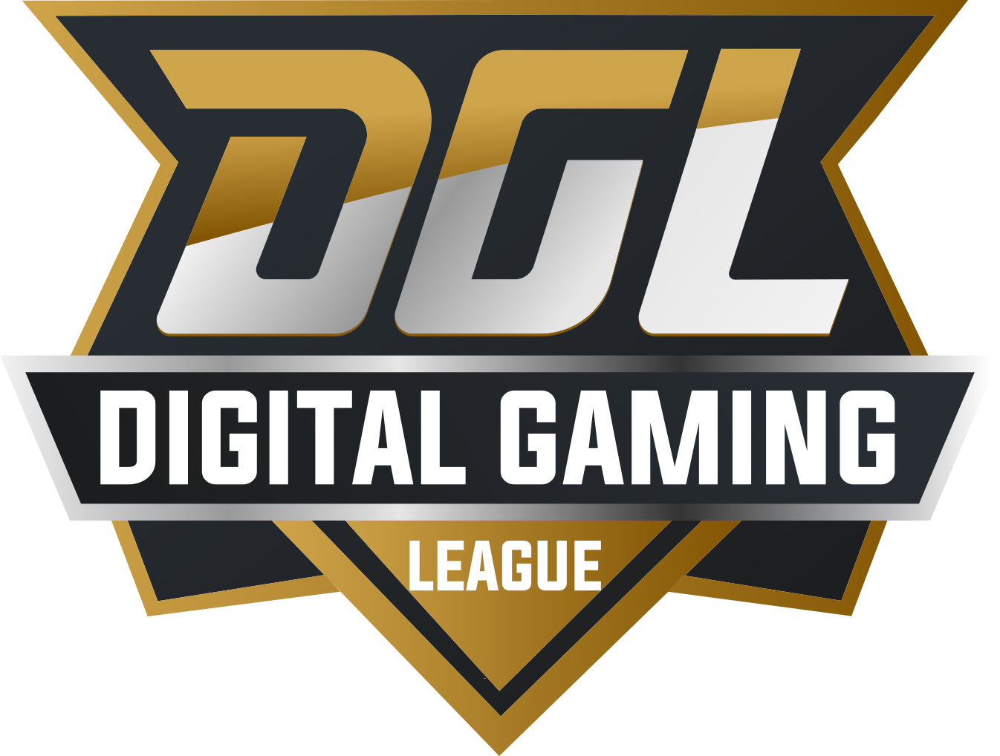
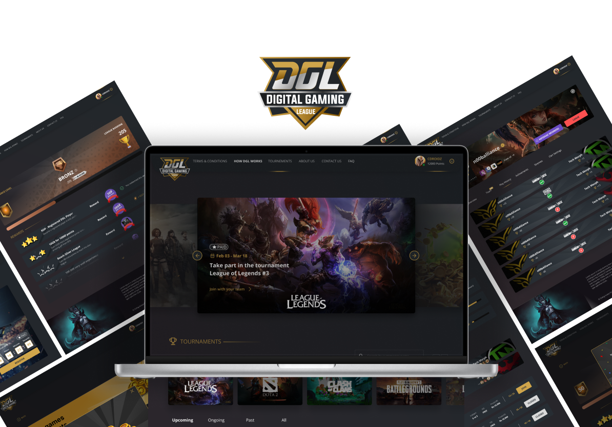

Digital Gaming League (DGL) is a national gaming and esports platform created to nurture Sri Lanka’s competitive gaming ecosystem, with a strong focus on mobile-first access, community building, and structured tournaments.
The platform enables gamers to discover tournaments, register teams, track schedules, earn points, and participate in a continuous competitive ecosystem rather than one-off events. DGL was designed as a long-running program, not a campaign, supporting casual players, semi-professional teams, and emerging esports talent across the country.
Originally launched as Dialog Gaming League, the platform later evolved into Digital Gaming League to reflect its broader scope beyond telco-led activations, positioning it as Sri Lanka’s first sustained gaming community program.
CONTEXT
Between 2017 and 2019, Sri Lanka saw a rapid rise in mobile gaming adoption, driven by affordable smartphones, competitive data plans, and growing interest in games like PUBG Mobile, Free Fire, and Call of Duty Mobile.
At the same time, esports attention was accelerating through school, university, and community circuits, but the product layer was still fragmented. Players could join isolated events, yet had no durable identity, progression path, or structured continuity between competitions.
Despite this growth, the ecosystem lacked:
A centralized competitive platform
Consistent tournament structures
Player progression, rankings, or recognition
A mobile-optimized experience built for local constraints
Most gaming events were fragmented, short-lived, or limited to physical expos. DGL was conceived to formalize gaming into a continuous, digital-first competitive ecosystem accessible from anywhere in the country.
Build one long-running gaming layer, not one-off event microsites.
Retention Loop
Register, compete, earn DGL points, and return for the next tournament cycle.

Digital Gaming League • Competitive ecosystem UX
"Tournament UX must stay stable under low signal, low battery, and one-thumb use."
Principle • Mobile Resilience
"Players, teams, and organizers need one shared progression layer."
Principle • Unified Progression

Designing DGL as Sri Lanka's mobile-first competitive gaming layer, built to grow player performance and telco value in parallel.
Project Snapshot
DGL (Digital Gaming League, previously Dialog Gaming League) was built as an always-on competitive platform for Sri Lankan players across mobile, PC, and console titles, with mobile as the clear strategic priority. The core business objective was to convert gaming engagement into sustained network usage and brand preference for Dialog, while giving players a credible place to benchmark performance by game, role, and platform.
I led product direction and UX strategy from 2018 to 2023, covering information architecture, competition lifecycle UX, progression loops, and the operational experience for players, teams, and tournament organizers.
Core hypothesis
If competitive progression is persistent, transparent, and optimized for mobile constraints, players return more often, compete more consistently, and generate stronger ecosystem retention than event-only campaigns.
Market Reality: 10+ Year Access Shift Built the Demand Base
Before shaping feature priorities, we analyzed long-horizon telecom and internet adoption signals. The strongest pattern: Sri Lanka's access layer expanded enough to make mobile-first competitive gaming mainstream, not niche.
Network Performance Signal: Speed Growth with Stable Latency
To validate performance expectations for real-time competitive gameplay, we reviewed Sri Lanka mobile performance benchmarks. Over the latest 12-month cycle, speed rose sharply while latency remained relatively stable. That supported richer tournament surfaces, live updates, and media-heavy participation flows.
+47.3%Mean mobile download growth (76.63 to 112.86 Mbps, Feb 2025 to Feb 2026)24-25msMean latency range during the same period74 to 69Country rank movement in mean mobile download
Global Gaming Signal: Why Mobile Had to Be the Center
Global gaming and smartphone signals supported the same direction. Mobile was already the largest gaming segment and continuing to expand, making it the right center of gravity for Dialog's product and network strategy.
Newzoo • 2019
$68.5B Mobile Games Revenue
From a $152.1B global games market, mobile represented 45% in 2019.
Newzoo • 2021
$90.7B Mobile Games Revenue
Newzoo analysis also referenced nearly 4B smartphone users globally.
Newzoo • 2024 Outlook
$116.4B Forecast
Forecast mobile revenue paired with ~4.5B smartphone users globally.
Ericsson • 2013 to 2024
1.9B to 7.13B Smartphone Subscriptions
Global smartphone subscriptions scaled from 1.9B (2013) to 7,130M (2024), reinforcing long-term mobile behavior change.
The space was active, but fragmented. Competitors and adjacent players proved demand, yet still left room for a persistent cross-tournament progression product anchored on mobile and telco-linked rewards.
SLT-MOBITEL eSports Platform
Launched with Swarmio as a telco-owned platform with tournaments, servers, content, and gaming bundles. Clear telecom-backed competitor signal.
Gamer.LK / InGame Esports
Long-running esports community and championship organizer with strong school, university, and mercantile tournament presence.
SLESA Structure and National Pathways
Formal national-level esports governance increased quality expectations around credibility, continuity, and athlete progression.
DGL Differentiation Target
Persistent player identity, points economy, cross-title visibility, and dialog between gameplay progression and data-led engagement.
Brand Evolution: Dialog to Digital
Public assets indicate a gradual naming transition from Dialog Gaming League to Digital Gaming League while maintaining the DGL acronym.
Inference from sources: this transition appears to have happened incrementally across campaigns and platform surfaces rather than via a single rebrand announcement.
June 27, 2016: Dialog promoted Clash-On as an early mobile-gaming program.
December 4, 2018: Dialog Play Expo referenced Dialog Gaming League as a year-round structure.
2021 to 2022 platform-era assets: DGL pages and tournament copy started using "Powered by Digital Gaming League" while terms pages still referenced "Dialog Gaming League."
Platform Features and Experience Architecture
DGL was intentionally structured as an operational product, not a campaign microsite. The system was designed around an ongoing loop: discover, register, compete, track, earn, return.
Tournament discovery layer: multi-title listing, filter-ready entry points, and schedule clarity across mobile sessions
Tournament detail ops: unified event detail pages for overview, participants, rules, and live-stream context
Player identity layer: personal/public profile states, claim workflows, and visible progression markers
Progression economy: DGL points as the engagement bridge between participation and loyalty value
Clan/team layer: clan profile views, team context, and play-history continuity
Network-aware UX: interaction density and hierarchy tuned for one-hand mobile use and variable connectivity
Screen Story from Product UI (Relevant Flows Only)
Tournament Lifecycle Surfaces
TournamentsTournament Details - General DetailsTournament Details - ParticipantsTournament Details - RulesTournament Details - Live Stream
Player Identity, Claiming, and Points
Profile - NEW - Personal ViewProfile - NEW - Public ViewProfile - Claim ActiveProfile - ClaimingProfile - Full Points ViewProfile - Leage of Legends
Clan and Team Continuity
Clan ProfileClan Profile - TeamClan Profile - Play History
Outcome Framework and Product KPIs
The measurement model was designed around product health, competitive activity, and network-linked value rather than isolated campaign impressions.
Acquisition: new profile creations, verified tournament sign-ups, and title-level registration conversion
Participation quality: check-in completion rate, match completion rate, and disqualification/failure reasons
Retention: repeat participation across tournament cycles, 30/60-day return rate, and profile progression depth
Ecosystem strength: active clans, cross-title participation overlap, and organizer repeat usage
Telco value linkage: points-to-data redemption behavior and gaming-session engagement recurrence